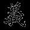
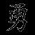
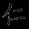
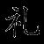
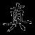
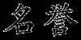
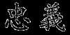

THÔNG TIN VỀ VÕ SĨ ĐẠO

Võ Sĩ Đạo có nghĩa là “Con đường của một võ sĩ”, nó bao gồm một loạt các tiêu chuẩn đạo đức và tinh thần tương tự với tinh thần hiệp sĩ của phương Tây. Các võ sĩ Nhật Bản phải luôn tuân thủ một cách khắt khe bảy tiêu chí cơ bản này trong suốt quá trình luyện tập cũng như; sinh hoạt đời thường.

1. Nghĩa: một người có phẩm chất này phải luôn đưa ra được quyết định chính xác dựa trên các chuẩn mực đạo lí, luôn bình đẳng, công bằng với tất cả mọi người bất kể màu da, chủng tộc, giới tính hay tuổi tác của họ.

2. Dũng: khả năng làm chủ tình hình bằng lòng quả cảm và sự tự tin.

3. Nhân: sự dung hòa của lòng trắc ẩn và độ lượng. Nhân cùng với Nghĩa là hai nguyên tắc nhằm đảm bảo một võ sĩ sẽ không dùng sức mạnh của mình một cách lỗ mãng hoặc vì lợi ích cá nhân.

4. Lễ: luôn nhã nhặn và cư xử lịch thiệp với người khác. Một người có lễ phải luôn tôn trọng tất cả mọi người.

5. Chân: hướng thiện, làm theo lẽ phải, luôn nỗ lực hết khả năng của mình, thành thật với chính bản thân, cũng như những người khác.

6. Danh dự: một võ sĩ phải biết cách phấn đấu tìm kiếm danh dự cho mình, cụ thể là luôn hướng tới thành công, nhưng đi kèm với đó phải là những hành động đúng mực, không bất chấp thủ đoạn.

7. Trung nghĩa: là chuẩn mực quan trọng nhất, căn bản nhất; nếu không trung thành, tận tụy với nhiệm vụ được giao, cũng như với người khác, thì sẽ không bao giờ đạt được thành tựu như mong muốn.